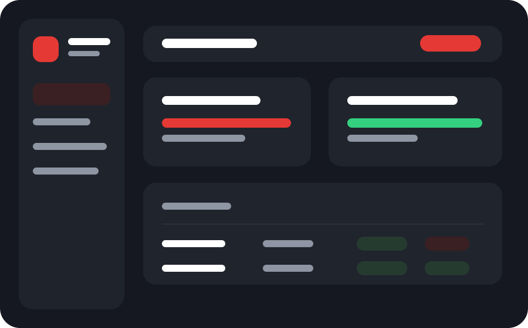

Desenvolvedor em formação com problema real resolvido
Sistemas operacionais para logística, estoque e conferência.
Eu construo soluções simples de usar, conectadas a banco de dados real e pensadas para reduzir erro humano em operações do dia a dia.
MM Check
1.9.6
Mapa conferido
Registro, histórico e divergência salvos.
Fluxo baseado em separação, expedição e contagem de estoque.
Dados preservados em banco real usando Neon.
Interface pensada para celular, tablet e coletor de código.
Projeto principal
MM Check — Sistema Inteligente de Conferência e Contagem
Projeto desenvolvido para solucionar problemas reais de expedição, conferência e contagem de estoque em ambiente logístico.

Erros em SKU, cor, voltagem, quantidade e divergências de saldo causam retrabalho.
Conferência por código, importação de saldo, histórico e controle de divergências.
Produto nasceu de uma necessidade real, com fluxo pensado para operação de filial.
Conferência inteligente
Importação PDF
Scanner CODE 128
Histórico
Dashboard
Tema escuro
PostgreSQL
Deploy
Stack
Tecnologias demonstradas
Roadmap
Como o projeto pode evoluir
Autenticação profissional
JWT, perfis, auditoria e recuperação segura de senha.
Relatórios gerenciais
Indicadores de produtividade, divergências e exportação de dados.
App instalável
PWA aprimorado para uso em celular e tablet no ambiente operacional.
Vamos conversar
Busco oportunidades para crescer como desenvolvedor.
Este portfólio mostra minha capacidade de transformar um problema operacional real em um sistema funcional, persistente e apresentável.